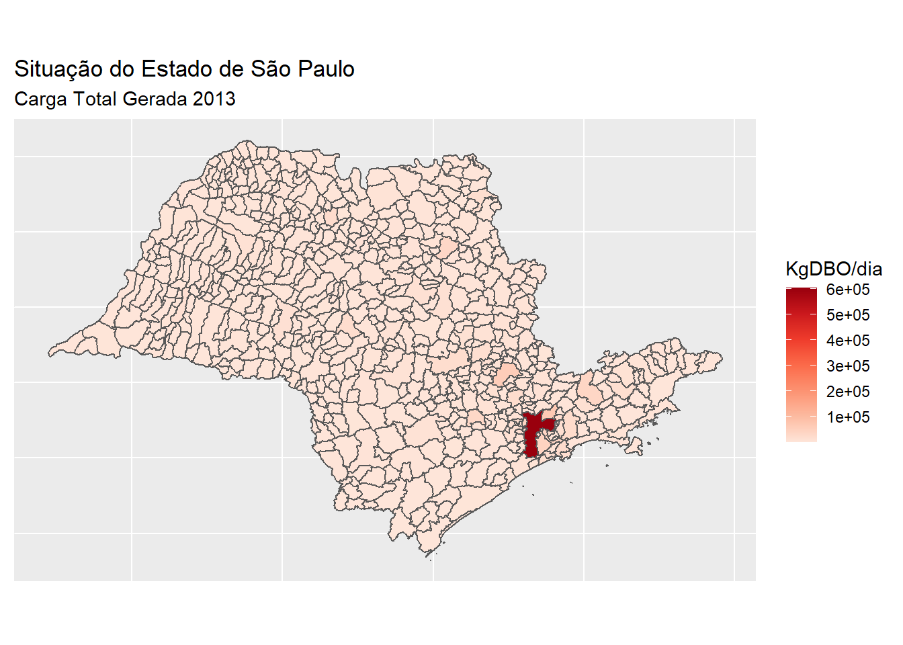
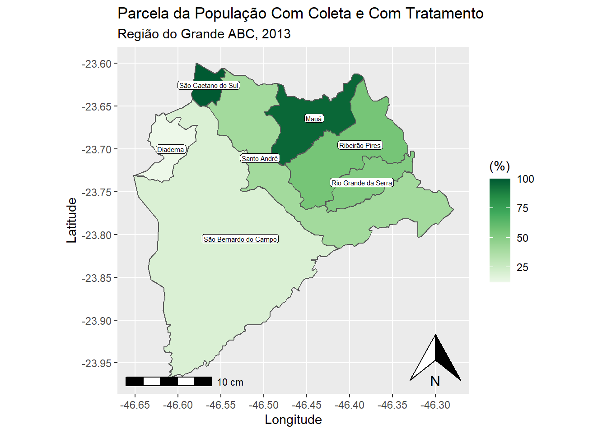

Objetivo
Saneamento é um tema de extrema importâcia. Aqui o foco principal é fazer uma análise exploratória simples com dados públicos.
Bibliotecas
Os dados
Os dados foram obtidos da agência nacional de águas e saneamento básico ANA.
Foi utilizado o Atlas Esgotos Situação 2013 - Remoção da Carga de Esgotos Gerada na Sede Municipal e o pacote geobr (Pereira and Goncalves 2021) para acessar informações sobre os dados espaciais do Brasil.
dados <- readr::read_delim("Atlas_Esgoto2013.csv",delim = ',')glimpse(dados)Rows: 5,570
Columns: 14
$ FID <dbl> 0, 1, 2, 3, 4, 5, 6, 7, 8, 9, 10, 11, 12, 13, 14, 15, 16, 1~
$ MUN_CD_MUN <dbl> 1100015, 1100023, 1100031, 1100049, 1100056, 1100064, 11000~
$ MUN_NM_MUN <chr> "Alta Floresta D Oeste", "Ariquemes", "Cabixi", "Cacoal", "~
$ MUN_UF <chr> "RO", "RO", "RO", "RO", "RO", "RO", "RO", "RO", "RO", "RO",~
$ MUN_NM_PRE <chr> "Serviço Autônomo de Água e Esgoto", "Companhia de Águas e ~
$ MUN_SIGLA_ <chr> "SAAE", "CAERD", "PM", "SAAE", "PM", "PM", "PM", "PM", "PM"~
$ MUN_POPU_2 <dbl> 14735, 85770, 2771, 67665, 15276, 14097, 2665, 8689, 22741,~
$ MUN_ICS <dbl> 1.4244810, 2.0176413, 0.3713331, 0.0000000, 0.6727235, 1.02~
$ MUN_IFSUTI <dbl> 1.8468146, 8.5762823, 0.6312662, 16.1786793, 19.6892988, 4.~
$ MUN_ISCST <dbl> 96.728704, 89.406076, 98.997401, 28.821321, 79.637978, 94.9~
$ MUN_C_GERA <dbl> 795, 4631, 149, 3653, 824, 761, 143, 469, 1228, 2088, 2027,~
$ MUN_C_REMA <dbl> 786, 4393, 149, 1791, 727, 742, 138, 445, 1126, 1907, 1986,~
$ MUN_EFIC_1 <dbl> 1.1080888, 5.1457694, 0.3787597, 50.9572076, 11.8135793, 2.~
$ MUN_ICT_FI <dbl> 0.000000, 0.000000, 0.000000, 55.000000, 0.000000, 0.000000~Manipulando as Bases
Renomeando as colunas (consultei o aplicativo do ANA).
dados <- dados %>%
dplyr::rename(
c("code_muni" = "MUN_CD_MUN","municipio"="MUN_NM_MUN" ,
"uf"="MUN_UF", "prestador_servico"= "MUN_NM_PRE" ,
"sigla_prestador"="MUN_SIGLA_" ,
"populacao2013" ="MUN_POPU_2" ,
"Parcela_População_Com_Coleta_Sem_Tratamento(%)")= =
"MUN_ICS",
"Parcela_População_Com_Solução_Individual(%)"(=)" =
"MUN_IFSUTI" ,
"Parcela_População_Sem_Coleta_Sem_Tratamento(%)")= =
"MUN_ISCST",
"Parcela_População_Com_Coleta_Com_Tratamento(%)")= =
"MUN_ICT_FI",
"Carga_Gerada"= "MUN_C_GERA",
"Carga_Remanescente" ="MUN_C_REMA" ,
"Remoção_Carga_Orgânica(DBO)(%)"="MUN_EFIC_1"))"))Podemos gerar tabelas com o pacote knitr para gerar tabelas.
Quais cidades geram maior carga de esgoto no estado de são paulo?
dados %>% filter(uf == "SP") %>%
select(c("municipio","Carga_Gerada")) %>%
arrange(desc(Carga_Gerada)) %>%
slice(1:10) %>%
knitr::kable(col.names =
c("Municípios"""Carga Gerada Total (kgDBO/dia)")),
"simple",caption = "Estado de São Paulo"))| Municípios | Carga Gerada Total (kgDBO/dia) |
|---|---|
| São Paulo | 604822 |
| Guarulhos | 65986 |
| Campinas | 57323 |
| São Bernardo do Campo | 43263 |
| Osasco | 40435 |
| Santo André | 38211 |
| São José dos Campos | 35351 |
| Ribeirão Preto | 32560 |
| Sorocaba | 31355 |
| Santos | 22833 |
Carregando os dados do geobr para o estado de São Paulo.
mapa <- geobr::read_municipality(code_muni = 35,year = 2018)Using year 2018Unindo as tabelas
sp <- dados %>% filter(uf =="SP") %>% merge(mapa)
nrow(sp) # verificando se possui as 645 cidades do estado de sp[1] 645Agora podemos gerar mapas com os pontos geom.
Quais cidades geram mais carga de esgoto no estado de São Paulo?
sp %>% ggplot() +
geom_sf(aes(fill = Carga_Gerada, geometry = geom)) +
labs(title = "Situação do Estado de São Paulo"lo",
subtitle = "Carga Total Gerada 2013") +
scale_fill_distiller(palette = "Reds",direction = 1,
name= "KgDBO/dia") +
theme(axis.title=element_blank(),
axis.text=element_blank(),
axis.ticks=element_blank())
Podemos verificar uma região específica ( como um conjunto de cidades). A forma mais segura é utilizar os códigos dos municípios, algumas cidades compartilham o mesmo nome.
Qual a porcentagem da população com coleta e tratamento de esgoto na região do grande ABC?
Aproveitei e adicionei o nome dos municípios, eixos das coordenadas, escala e a indicação do norte.
listaABC = list(3548708, 3547809, 3529401, 3513801, 3548807, 3543303, 3544103)
sp %>% filter(code_muni %in% listaABC) %>%
ggplot() +
geom_sf(aes(fill = `Parcela_População_Com_Coleta_Com_Tratamento(%)`)`,
geometry = geom)) +
geom_sf_label(aes(label = municipio,geometry =geom),
label.padding = unit(0.5,"mm"),
size = 2) +
labs(title = "Parcela da População Com Coleta e Com Tratamento"o",
subtitle = "Região do Grande ABC, 2013 "",
x = "Longitude",y ="Latitude") +
scale_fill_distiller(palette = "Greens",direction = 1,
name= "(%)") +
annotation_north_arrow(location = "br") +
annotation_scale(location ="bl"
)Warning in st_point_on_surface.sfc(sf::st_zm(x)): st_point_on_surface may not
give correct results for longitude/latitude data